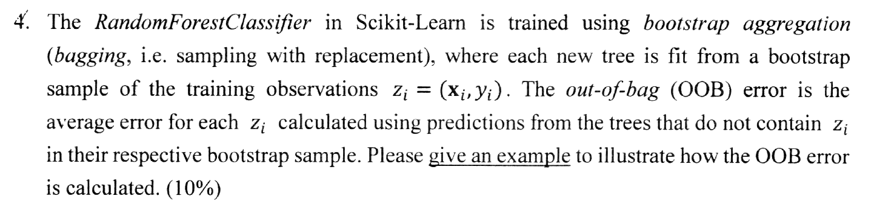
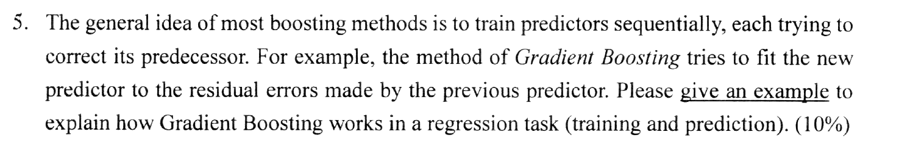

考古題・PYTHON 機器學習實務
2023 期末考
2023 年 12 月 26 日（112 學年）的期末考，共 8 大題、滿分 100%，範圍是第 5–9 章。這份考卷只有題目，沒有學長姊的參考答案；其中 5 題和 2024 期末考幾乎一樣，可以直接連過去看那邊的參考答案。每一題都附 Claude 的詳解（寫給高中生也看得懂），一開始是藏起來的。
- 範圍：第 5–9 章
- 題數：8 大題、13 小題
- 配分：第 3、8 題各 20%，其餘各 10%
- 題目要求：不能只翻譯名詞，必須進一步說明，否則不算分
第 5、6 章（SVM、決策樹）的觀念已經可以點進講義；第 7–9 章的講義還在製作中，「這題考到的觀念」裡先只列出觀念名稱，講義完成後會改成可以點的連結。掃描的考卷上原本有前一位使用者的鉛筆記號，已盡量清除，少數題號旁可能還有淡淡的痕跡。
- 先自己寫。看題目，在紙上把答案寫出來，至少寫個大概。
- 對照重複的題目。和 2024 期末考一樣的題目，可以點連結看學長姊在那邊怎麼寫。
- 最後弄懂觀念。打開「Claude 的詳解」，看白話說明和互動實驗；會了就按「我會了」。
線性 SVM 的超參數 C10%・第 5 章
![1. Given a dataset D = {(x(i), y(i)) | x(i) ∈ Rⁿ, y(i) ∈ (−1, 1)} for binary classification in which y(i) = 1 for positive class and y(i) = −1 for negative class, the linear SVM cost function adopted by SGDClassifier is as follows: J(w, b) = ½ wᵀw + C Σ max(0, 1 − y(i)(wᵀx(i) + b)). The 1st term in the cost function pushes the model to have a small weight vector w, leading to a larger margin. The 2nd term computes the total of all margin violations multiplied by the hyperparameter C. Two values of C are used in training the Iris dataset as shown in the following two figures. Please discuss which C of the figures is larger or smaller and explain the influence of C on margin violation and the decision boundary according to the cost function. (10%) Left figure: a wide street with many instances inside it. Right figure: a narrow street with few instances inside it.](img/2023-final/q1.png) 開新分頁放大
開新分頁放大
中文題意：二元分類資料，正類 SGDClassifier 用的線性 SVM 成本函數是
這題和 2024 期末考第 1 題 幾乎一模一樣：同一題考了兩年，是必考題。
Claude 的詳解白話講解・C 的實驗先自己寫寫看
結論：左圖的
成本函數的兩項在互相拉扯：
- 第一項
希望 小。間隔（街道）寬度是 ，所以 越小，街道越寬。 - 第二項是 hinge loss 的總和：一筆資料如果在街道外而且分對（
），代價是 0；如果跑進街道裡或分錯，就要付 ，越深入付越多。 決定這筆「罰款」有多重。
把
實驗裡的數字是用 StandardScaler + LinearSVC(loss="hinge") 在 100 朵 versicolor 和 virginica 上訓練的結果。課本對應的兩張圖，左邊是
RBF 相似度特徵10%・第 5 章
![2. One approach to handling nonlinear datasets in SVM is to add more features by using the similarity features based on Gaussian Radial Basis Function (RBF). The equation of RBF is listed as follows: φγ(x, ℓ) = exp(−γ‖x − ℓ‖²), where x is an instance, ℓ is the landmark, and γ is a hyperparameter. Assuming there are m instances in the original dataset and n-dimensional feature for each instance. If we create a landmark at the location of each and every instance in the dataset and apply the RBF similarity features method (and drop original features), please describe the new dataset in terms of the number of instances and the number of features. Please also give an example of how the features of an instance are formed in the new dataset. (10%)](img/2023-final/q2.png) 開新分頁放大
開新分頁放大
中文題意：SVM 處理非線性資料的一種方法，是用高斯 RBF 加入「相似度特徵」：
這題和 2024 期末考第 2 題 幾乎一模一樣：同一題考了兩年，是必考題。
Claude 的詳解白話講解・γ 的實驗先自己寫寫看
新資料集有
- 筆數不變：我們只是替原本的每一筆資料換一組新特徵，沒有新增或刪除資料，所以還是
筆。 - 特徵數
地標數：每一筆資料的位置都放一個地標，共 個地標；每個地標產生一個特徵「和這個地標有多像」，原本的 個特徵丟掉，所以剩 個特徵（和 無關）。
第
例子：3 筆一維資料
同樣算出
把每個地標想成一台 Wi-Fi 基地台。
為什麼要這樣做？原本在一維上混在一起、用一條線分不開的資料，換成和地標的相似度之後，可能就能用一條直線（超平面）分開。代價是資料有
決策樹：縮放、Gini 與複雜度20%（各 5%）・第 6 章
![3. Scikit-Learn uses the Classification and Regression Tree algorithm to train decision trees. The algorithm works by splitting the training set into two subsets using a single feature k and a threshold tk. It searches for the pair (k, tk) that produces the purest subsets (weighted by their size). The algorithm tries to minimize the following cost function: J(k, tk) = (m_left/m) G_left + (m_right/m) G_right, where G_left/right measures the impurity of the left/right subset, m_left/right is the number of instances in the left/right subset. The equation of calculating the Gini impurity is as follows: G = 1 − Σ pᵢ², where pᵢ is the ratio of class i instances among the training instances in the node, and the total number of classes = c. (1) Please explain the reason why decision trees don’t require feature scaling at all. (5%) (2) Please discuss the worst-case value and the best-case value of the Gini impurity of a node. (5%) Given m instances in a training dataset and n-dimensional feature for each instance, please explain the reason of the following statements about decision tree classifiers. (3) The computational complexity of making a prediction is O(log₂(m)). (5%) (4) The computational complexity of training a decision tree classifier is O(n*m*log₂(m)). (5%)](img/2023-final/q3.png) 開新分頁放大
開新分頁放大
- 說明為什麼決策樹完全不需要特徵縮放。
- 討論一個節點的 Gini 不純度最差（最大）和最好（最小）的值。
- （訓練資料
筆、每筆 個特徵）說明為什麼做一次預測的複雜度是 。 - 說明為什麼訓練一棵決策樹的複雜度是
。
(3)(4) 和 2024 期末考第 4 題 一模一樣；(1)(2) 是這一年才考的。
Claude 的詳解白話講解・Gini 計算機・圖解先自己寫寫看
(1)為什麼決策樹完全不需要特徵縮放
- 決策樹的每個節點只問一個問題：「第
個特徵 嗎？」一次只看一個特徵，而且只在乎資料在這個特徵上的大小順序。 - min-max 縮放、標準化都是對每個特徵各自做「先平移、再乘一個正數」，不會改變資料的大小順序。原本能用
切開的兩群資料，縮放後用縮放過的門檻 就能切出完全一樣的兩群。 - Gini 不純度只看「哪些資料被分到左邊、哪些到右邊」，和數值本身大小無關。所以每一步選到的切法、長出來的樹、預測結果都一模一樣，只是門檻的數字換了單位。
- 對照：線性模型、SVM、KNN 會把不同特徵加起來或算距離，梯度下降也受尺度影響，所以需要縮放；決策樹從不把不同特徵混在一起比較，所以不需要。
全班照身高排隊，不管用公分還是英寸量，排出來的順序都一樣，「比 170 公分高的人」和「比 66.9 英寸高的人」是同一群人。決策樹只問「比某個值高嗎」，所以換單位、換尺度都不影響它把誰分到哪一邊。
(2)Gini 不純度的最好與最差情況
最好（最小）＝ 0：節點裡全是同一類，某一類
最差（最大）＝
例如二元分類最差是
為什麼平均分配最差：因為
Gini 不純度＝從節點裡隨機抽兩次（放回），抽到不同類的機率。全是同一類，永遠抽到一樣的，機率 0；每一類一樣多，最難猜，抽到不同類的機會最大。
隨機森林的 OOB 誤差10%・第 7 章

開新分頁放大中文題意：scikit-learn 的 RandomForestClassifier 用 bagging（取後放回的抽樣）訓練：每棵樹用一份從訓練資料
這題和 2024 期末考第 5 題 幾乎一模一樣：同一題考了兩年，是必考題。
Claude 的詳解白話講解・具體例子・抽樣模擬先自己寫寫看
- Bagging 與取後放回抽樣第 7 章・講義準備中
- Out-of-bag 評估第 7 章・講義準備中
- 隨機森林第 7 章・講義準備中
例子：訓練資料有 6 筆
| 樹 | bootstrap 樣本（抽到的） | 沒抽到的（OOB） |
|---|---|---|
| T₁ | z₁, z₁, z₂, z₄, z₅, z₅ | z₃, z₆ |
| T₂ | z₂, z₃, z₃, z₄, z₆, z₆ | z₁, z₅ |
| T₃ | z₁, z₃, z₄, z₅, z₆, z₆ | z₂ |
接著對每一筆資料，只問「沒看過它」的樹（有好幾棵就多數決）：
| 資料 | 真實答案 | 沒看過它的樹 | OOB 預測 | 對錯 |
|---|---|---|---|---|
| z₁ | 貓 | T₂ | 貓 | 對 |
| z₂ | 狗 | T₃ | 貓 | 錯 |
| z₃ | 狗 | T₁ | 狗 | 對 |
| z₄ | 貓 | （沒有，3 棵都抽到它） | — | 略過 |
| z₅ | 貓 | T₂ | 貓 | 對 |
| z₆ | 貓 | T₁ | 狗 | 錯 |
有 OOB 預測的 5 筆裡錯了 2 筆，所以 OOB 誤差
每棵樹像一位學生，用「抽籤抽到的練習題」準備考試（有些題目抽到好幾次，有些一次都沒抽到）。考試時，每一題只問沒練過這題的同學，再讓他們投票作答。因為他們沒看過這題，答對率就能反映真正的實力，所以 OOB 誤差可以當成免費的驗證集，不用另外切資料。scikit-learn 只要設 oob_score=True 就會自動算。
抽一次沒抽到某一筆的機率是
Gradient Boosting10%・第 7 章

開新分頁放大中文題意：大部分 boosting 方法的想法，是依序訓練好幾個預測器，每一個都試著修正前一個的錯誤。例如 Gradient Boosting 讓新的預測器去擬合前一個預測器留下的殘差。請舉一個例子，說明 Gradient Boosting 在迴歸問題上怎麼訓練、怎麼預測。
Claude 的詳解白話講解・手算例子・Boosting 實驗先自己寫寫看
- Boosting 與 Gradient Boosting第 7 章・講義準備中
- 迴歸樹第 6 章・第 6 篇
- 偏差與變異的取捨第 4 章・第 4 篇
想法：一棵接一棵訓練。第一棵樹直接學目標值
例子：3 筆資料
- 第 1 棵樹學
最好的切法是 ：左邊預測 2，右邊預測 。殘差 ，平方誤差和 0.5。 - 第 2 棵樹學
最好的切法是 ：左邊預測 ，右邊預測 0.5。新殘差 ，平方誤差和降到 0.125。 - 第 3 棵樹學
最好的切法是 ：左邊預測 0.25，右邊預測 。新殘差 ，平方誤差和降到 0.031。 - 預測新資料時，把每棵樹的預測加起來：
。例如 ： 。
| 加總 | 剩下的誤差 | |||||
|---|---|---|---|---|---|---|
| 1 | 2 | 2 | −0.25 | 0.25 | 2 | 0 |
| 2 | 6 | 6.5 | −0.25 | −0.125 | 6.125 | −0.125 |
| 3 | 7 | 6.5 | 0.5 | −0.125 | 6.875 | 0.125 |
每多一棵樹，就修正一點前面剩下的誤差。實務上會再乘一個學習率
Gradient Boosting 像打高爾夫：第一桿朝洞口打，球停在某處；第二桿不用從頭打，只要打「球到洞口還差的那段距離」；第三桿再修正剩下的一點點。每一桿只負責上一桿留下的誤差，所有桿加起來就把球送進洞。學習率就是每一桿都「輕輕打」，比較慢，但不容易打過頭。
和 Bagging 的差別：Bagging（例如隨機森林）的樹是各自獨立、同時訓練，最後投票或平均；Boosting 的樹是一棵接一棵訓練，每一棵都依賴前一棵留下的誤差，所以不能平行訓練。
降維與 PCA10%（各 5%）・第 8 章
 開新分頁放大
開新分頁放大
- 用一個例子說明降維（dimensionality reduction）。
- 參考下圖，說明 PCA（主成分分析）用來降維的想法。
這題和 2024 期末考第 7 題 幾乎一模一樣：同一題考了兩年，是必考題。
Claude 的詳解白話講解・投影實驗先自己寫寫看
- 維度的詛咒與降維的用途第 8 章・講義準備中
- 投影（projection）第 8 章・講義準備中
- PCA 與解釋變異比例第 8 章・講義準備中
(1)用例子說明降維
降維是在盡量保留資訊的前提下，減少特徵的數量。
例子：MNIST 每張手寫數字圖是 28 × 28 = 784 個像素，也就是 784 個特徵。但圖片邊緣的像素幾乎都是白色，對辨識沒有幫助，相鄰的像素也高度相關。用 PCA 降維、保留 95% 的變異量，只需要大約 154 個特徵，資料大小剩約 20%，訓練變快很多，分類準確率卻只稍微下降。
好處：訓練更快、更省空間；去掉雜訊和多餘的特徵，有時還能減少過擬合；降到 2 維或 3 維可以畫成圖來觀察。代價：一定會損失一些資訊，而且多了一道處理步驟。
降維像拍照：真實世界是 3 維的，照片只有 2 維，但一張角度選得好的照片，還是能讓你認出是誰。角度選不好（例如只拍到頭頂），資訊就丟光了。PCA 就是在找「拍出來最能看出差異的角度」。
(2)從圖看 PCA 的想法
圖左是一份 2 維資料，沿著斜線方向拉得很長。右邊三張圖是把資料投影到三條不同的軸上、變成 1 維的結果：
- 投影到 C1（沿著資料拉長的方向）：點分得最開，變異量最大，原本點和點之間的差異大多被保留下來。
- 投影到中間那條虛線軸：點擠在一起一些，變異量變小。
- 投影到 C2（和 C1 垂直）：點全擠成一團，變異量最小，幾乎所有資訊都不見了。
PCA 的做法就是：先找出讓投影後變異量最大的軸，稱為第一主成分（C1）；再找和它垂直、能保留剩下最多變異量的軸（C2），依此類推。降到
K-means 演算法10%・第 9 章
 開新分頁放大
開新分頁放大
中文題意：參考下面的圖，說明 K-means 演算法。（圖左欄是「更新中心點（一開始隨機）」，右欄是「標記資料」，照箭頭順序交替進行。）
Claude 的詳解白話講解・K-means 逐步實驗先自己寫寫看
- K-means 演算法第 9 章・講義準備中
- 初始化、inertia 與 K-means++第 9 章・講義準備中
- 用輪廓係數選群數2024 期末考・第 8 題
K-means 要把資料分成
- 隨機初始化隨機選
個中心（左上圖，有些中心一開始就擠在同一團資料裡）。 - 標記資料每一筆資料分給最近的中心。圖中的直線就是各中心勢力範圍的邊界（兩個中心連線的垂直平分線），每塊區域裡的資料屬於同一群。
- 更新中心每個中心移到它這一群所有資料的平均位置。中心移動後，勢力範圍也跟著改變。
- 重複第 2、3 步直到標記不再改變、中心不再移動（收斂）。圖中從上往下看，中心一步步移到各團資料的中央，最後一列就是收斂的結果。
為什麼一定會停：K-means 在減少 inertia（每筆資料到它所屬中心的距離平方和），標記和更新兩個步驟都只會讓它變小或不變，所以一定會收斂。但不保證最好：結果取決於初始中心，可能卡在不好的解（例如兩個中心分到同一團資料），所以實務上會用不同的初始值跑好幾次（scikit-learn 預設 n_init 次），留下 inertia 最小的，或用 K-means++ 讓初始中心彼此分散。
多按幾次「重新初始化」比較看看：隨機初始化很常卡在不好的解（兩團小資料被同一個中心管，大的那團被切成兩半）；K-means++ 成功的機會高得多，但也不保證，所以 scikit-learn 預設會跑好幾次，留下 inertia 最小的結果。
想像要在城裡開
K-means 的限制：要事先決定
GMM 的異常偵測與分群邊界20%（各 10%）・第 9 章
![10. GMM with K components uses the following equation to approximate the real distribution of data: p(x) = Σ_{k=1}^{K} p(x|z=k) p(z=k), where z is a categorical latent variable indicating the component identity (cluster), and p(x|z=k) = N(x; μk, Σk). The probability of an instance x belonging to a cluster z = c is calculated by the following equation: p(z=c|x) = p(x|z=c) p(z=c) / Σ_{k=1}^{K} p(x|z=k) p(z=k). Please refer to the following example in which anomalies are indicated by stars and cluster boundaries are indicated by the dashed line, and explain: (1) How is GMM used for anomaly detection? (10%) (2) How does GMM determine the cluster boundaries? (10%) The figure shows three Gaussian clusters with density contours, cluster centers marked with crosses, anomalies as stars outside the outer contours, and dashed curved boundaries between clusters.](img/2023-final/q8.png) 開新分頁放大
開新分頁放大
- GMM 怎麼用來做異常偵測？
- GMM 怎麼決定群的邊界？
這題和 2024 期末考第 10 題 一樣，但這一年兩小題各佔 10%，寫得更完整比較保險。
Claude 的詳解白話講解・一維 GMM 實驗先自己寫寫看
- 用 GMM 做異常偵測第 9 章・講義準備中
- 後驗機率與分群邊界第 9 章・講義準備中
- 門檻的取捨（和 Precision／Recall 同一個道理）2024 期中考・第 4 題
(1)異常偵測
- 用訓練資料擬合 GMM，得到每一群的
。 - 對每一筆資料算密度
（scikit-learn 用 score_samples，回傳的是）。密度高代表這附近資料很多，密度低代表這個位置很少出現資料。 - 訂一個密度門檻，
低於門檻的就判定為異常。門檻常用百分位數來訂：例如取訓練資料密度的第 4 百分位數，就是把密度最低的約 4% 資料標成異常。圖中的星號都落在最外圈等高線外的低密度區域，所以被判為異常。
門檻是一種取捨：門檻訂高，抓到的異常變多，但也會把正常資料誤判成異常（誤報多）；門檻訂低，誤報少，但會漏掉真正的異常。
(2)分群邊界
GMM 對每筆資料算出它屬於每一群的後驗機率 predict 就是這樣做）。所以邊界就是「最大的兩個後驗機率剛好相等」的地方：
（兩邊的分母一樣，可以約掉。）邊界的一側
異常偵測像在看夜晚城市的燈光地圖：燈很密的地方是市區（密度高），偶爾一盞燈出現在深山裡（密度很低），就值得注意。分群邊界像兩個超商的「勢力範圍」：你會去「對你來說比較有吸引力」的那家，吸引力同時看距離（高斯密度）和店有多大（權重
考題取自 2023 年 12 月 26 日「Python 機器學習實務」期末考；「Claude 的詳解」由 Claude 撰寫，僅供學習參考，不代表授課老師的標準答案。若發現錯誤，歡迎回報。本站內容以 CC BY-NC 4.0 授權；本站以 GoatCounter 匿名統計瀏覽次數，不使用 cookie。